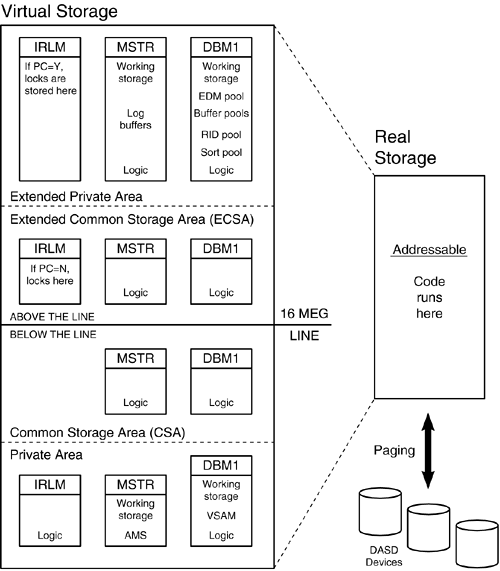
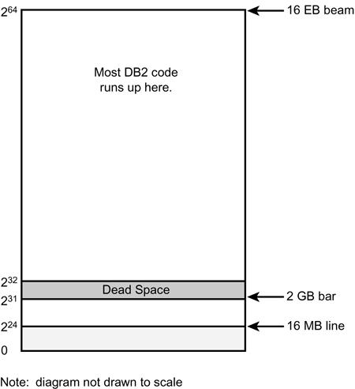
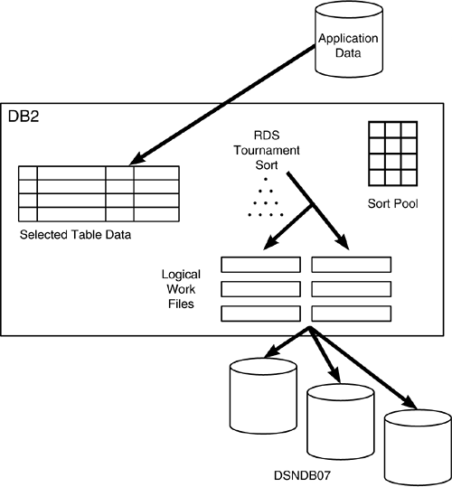
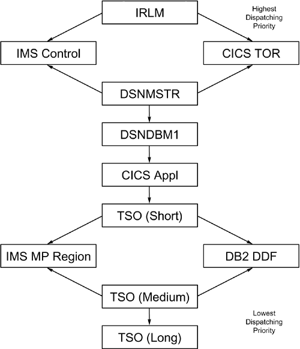

|
|
< Day Day Up > |
|
Tuning the z/OS and OS/390 EnvironmentOperating system tuning is a complex task best accomplished by extensively trained technicians. All DB2 users, however, should understand the basics of z/OS resource exploitation and the avenues for tuning it. Operating system tuning, as it affects DB2 performance, can be broken down into four areas:
Now turn your attention to each of these four areas. The sections that follow offer various tuning guidelines and strategies along the way. Tuning Memory UseHow does DB2 utilize available memory? Before answering this question, you need a basic understanding of what memory is and how it is used by z/OS. Memory is the working storage available for programs and the data the programs use as they operate. Storage is often used as a synonym for memory. MVS stands for Multiple Virtual Storage, which refers to MVS's capability to manage virtual memory. To manage virtual memory, the operating system uses a large pool of memory, known as virtual storage, to "back up" real storage. (Real storage is also called central storage. Virtual storage is also called expanded storage.) Real storage is addressable. Programs and their data must be placed in real storage before they can run. Virtual memory management is the reason that multiple address spaces can execute concurrently, regardless of the physical memory they eventually use. This way, the system can process more jobs than can be held in real storage; information is swapped back and forth between virtual storage and real storage, a process known as paging. You'll discover two types of paging. The first, moving data between virtual and real storage, is inexpensive in terms of resource consumption and occurs regularly. As more real storage is requested, a second type of paging can result. This type of paging consists of moving portions of memory to disk temporarily. This type is expensive and should be avoided.
Virtual storage can be broken down further in two ways:
The common area is the portion of virtual storage addressable from any address space. The private area stores data that is addressable by only an individual address space. A common area and private area exist both above and below the line. But what does that mean? Above and below the line refers to an imaginary line in virtual storage at the 16-megabyte level. Memory above the line is often called extended storage. In earlier versions of MVS, 16 megabytes was the upper limit for virtual and real storage addressability. New releases of MVS add addressability above the 16-megabyte line. And z/OS provides addressability up to 16-exabytes. The constraints imposed by the addressing schemes of older systems, however, can cause dense packing of applications into memory below the line. Systems that use memory above the line provide more efficient memory management, as well as relief for systems requiring memory use below the line. How does DB2 fit into this memory structure? The answer differs quite a bit depending on whether you are running DB2 V8 or a previous release. Let's discuss releases prior to V8 first (see Figure 27.1). DB2 manages memory efficiently, making use of extended storage when possible. A well-tuned DB2 subsystem requires less than 2 megabytes of virtual storage below the line. The things that affect below-the-line storage are the DSMAX and number of threads using functions (like AMS) that still run below the 16M line. Figure 27.1. DB2 memory use (pre-V8).z/Architecture, DB2 V8, and 64 BitsMoving from a 31-bit architecture of past operating systems to a 64-bit architecture allows DB2 to access much more virtual storage. Using z/OS, DB2 can deploy a single large address space of up to 16 exabytes (264 bytes). This architecture replaces both hiperspaces and data spaces. Virtual storage management is improved because it is all in one place and simpler—thereby improving the scalability, availability, and performance of your DB2 subsystems.
Figure 27.2. DB2 V8 memory use. A Rundown of DB2's Memory StructuresLet's examine the primary consumers of memory in a DB2 subsystem and see how we might be able to tune them for better performance. Buffer PoolsDB2 provides 80 virtual buffer pools and optional hiperpools (pre-V8) for maintaining recently accessed table and index pages in virtual storage. The Buffer Manager component of DB2 manages I/O and the use of buffers to reduce the cost of I/O. If the Buffer Manager can satisfy a GETPAGE request from memory in the buffer pool rather than from disk, performance can increase significantly. DB2 provides buffer pools as follows:
The size of a buffer pool is specified to DB2 in pages. As of DB2 V8, the maximum total buffer pool size is 1 terabyte. Tuning DB2 buffer pools is a critical piece of overall DB2 subsystem tuning. Strategies for effective buffer pool tuning are presented in Chapter 28, "Tuning DB2's Components," in the section on DB2 subsystem tuning. In addition to the buffer pools, DB2 creates a RID pool and a sort pool. Sort PoolRIDs processed during the execution of list prefetch are stored in the RID pool. Remember that hybrid joins and multiple-index access paths use list prefetch. The RID pool should be increased as your application's use of list prefetch and multiple-index access paths increase. The size of the RID pool can be explicitly specified using the MAXRBLK DSNZPARM parameter. The RID pool can range in size from 128K to 10 GB. The default is 8000K. Of course, you can set the RID pool to 0 too, which has the effect of disabling the RID pool, causing DB2 to avoid access paths and join methods that require RID pool storage. CAUTION Do not set the RID pool to 0. It is almost always better to allow DB2 to determine when it makes sense to use the RID pool for accessing data than to arbitrarily disable the RID pool.
Sort PoolThe sort pool, sometimes called a sort work area, is used when DB2 invokes a sort. Before I discuss the sort pool, examine the DB2 sorting process, which is shown in Figure 27.3. The RDS (Relational Data Services) component of DB2 uses a tournament sort technique to perform internal DB2 sorting. Figure 27.3. How DB2 sorts. The tournament sort works as follows:
How, then, does the sort pool affect RDS sorting? As the sort pool becomes larger, so does the tree used for the tournament sort. As the tree becomes larger, fewer runs are produced. As fewer runs are produced, less data must be merged and the likelihood of using DSNDB07 diminishes. The result is a more efficient sort process. You can use the following formula to estimate an efficient sort pool for each process: 32000 * (12 + sort key length + sort data length + 4) Of course, each process will have a different optimal sort pool size because the length of the sort key and the length of the data to be sorted will vary. Each concurrent sort operation is assigned a sort pool. The sort work area can range in size from a minimum of 240K to a maximum of 128 MB. The size of the sort pool can be explicitly specified using the SRTPOOL DSNZPARM parameter. If the sort pool is not explicitly specified, its default value is 2000K.
EDM PoolThe EDM pool is used to maintain DBDs, cursor tables (for plans), package tables, the authorization cache, and the dynamic statement cache needed by executing SQL statements. The size of the EDM pool is specified in the DSNZPARMs and must be determined before starting DB2. To estimate the size of the EDM pool, you must have the following information:
For new DB2 subsystems, letting the DB2 installation process use default values to calculate the size of the EDM pool is best. For existing DB2 subsystems, you can arrive at the average plan and package sizes by issuing the following SQL queries. For the average plan size, use this query: SELECT AVG(PLSIZE) FROM SYSIBM.SYSPLAN For the average package size, use this query: SELECT AVG(PKSIZE) FROM SYSIBM.SYSPACKAGE Add the two averages and divide by 2 to arrive at the total average plan and package size.
Another factor influencing the overall size of plans is the authorization cache. You can associate an authid cache for each plan by setting the size in the CACHESIZE parameter of the BIND command.
NOTE Authids are not checked for plans that can be executed by PUBLIC. Avoid specifying a CACHESIZE for these plans. For the average size of the plan authorization ID cache, use the following query: SELECT AVG(CACHESIZE) FROM SYSIBM.SYSPLAN; Package authorization caching is a system-wide option. Caching is either enabled or disabled for the entire subsystem and a global cache is used. Therefore, package authorization caching does not have an impact on package size. To arrive at the average DBD size, you must know the average number of columns per table and the average number of tables per database. A general formula for calculating the average DBD size follows:
average DBD size = [(average # of tables per database) x 1K]
+ [(average # of columns per table) x .5K]
You can use the following queries to arrive at the average number of tables per database and the average number of columns per table. First, to determine the average number of tables per database, issue the following query: SELECT COUNT(*) / COUNT(DISTINCT(DBNAME)) FROM SYSIBM.SYSTABLES WHERE TYPE = 'T'; You can use the following query to arrive at the average number of columns per table: SELECT AVG(COLCOUNT) FROM SYSIBM.SYSTABLES WHERE TYPE = 'T'; To arrive at the average number of concurrent plans, packages, and DBDs, you would be wise to accumulate a series of DB2 accounting statistics for your peak processing time. Use these figures to estimate the number of concurrent plans. Determining the average number of concurrent packages is not easy. You must completely understand your particular DB2 implementation to be successful at determining this number. Asking the following questions can help:
To determine the average number of concurrent DBDs, you must understand each application's database use. If an application that typically uses three databases is much more active than another that uses 12 databases, you must factor this information into your EDM pool sizing strategy. Obtaining this information can be difficult, so you might need to estimate. A general calculation for the EDM pool size follows:
EDM Pool Size = [(((#CPP) + (#TPP/4)) x PP-AVG) +
(((#CPP) + (#TPP/4)) x C-AVG) +
((#DBD) x DBD-AVG) + 50K] x 1.25
The systems programmer calculates the size of the EDM pool during DB2 installation based on estimates of the values discussed in this section. The installation process for DB2 contains the preceding algorithm. The calculation used by the DB2 installation process is only as good as the information supplied to it. The default values (calculated by DB2 during the installation process) are adequate for most shops if correct estimates were input. As DB2 use expands, however, the EDM pool should expand proportionally. The size of the EDM pool can be explicitly specified using the EDMPOOL DSNZPARM parameter. As your DB2 usage patterns change, plan and package sizes can grow, necessitating EDM pool growth. For example, using DEGREE(ANY) instead of DEGREE(1) increases plan and package sizes. Additionally, as more applications are made operational, or as more concurrent users start to access existing applications, EDM pool usage will increase.
DB2 Working StorageDB2 working storage is memory used by DB2 as a temporary work area. The best way to estimate the working storage size for DB2 is to separate the number of concurrent DB2 users into users of dynamic SQL and users of static SQL. Dynamic SQL uses more working storage (but possibly less of the EDM pool) than static SQL. Estimate approximately 25KB per static SQL user and 75KB per dynamic SQL user. Additionally, DB2 itself uses about 600K. Therefore, you can estimate DB2 working storage usage by using the following: (concurrent static SQL users x 25K) + (concurrent dynamic SQL users x 75K) + 600K
DB2 CodeThe DB2 code itself requires approximately 4,300KB of storage. This value is inflexible. IRLMLocks are maintained in memory by the IRLM. This capability enables DB2 to process a lock request quickly and efficiently without a physical read.
The IRLM uses approximately 250 bytes per lock. This number is constant whether you are using row locks or page locks, so keep that in mind if you are considering row-level locking. You will likely consume much more storage with row locking because DB2 will probably have to lock more rows than it would pages (depending on the number of rows per page for the table space). Open Data SetsEach open VSAM data set requires approximately 1.8KB for the VSAM control block that is created. Refer to Chapter 5, "Data Definition Guidelines," for a discussion of the CLOSE parameter for DB2 table spaces and indexes and its effect on performance.
Total Memory RequirementsBy adding the memory requirements, as specified in the preceding sections, for the EDM pool, buffer pools, RID pool, sort pool, working storage, open data sets, and IRLM for each DB2 subsystem, you can estimate the memory resources required for DB2. If insufficient memory is available, consider limiting the availability of DB2 until more memory can be procured.
Tuning CPU UseTuning CPU use is a factor in reducing DB2 resource consumption and providing an efficient environment. The major factors affecting CPU cost are as follow:
The following paragraphs offer additional information about each of these factors, including suggested tuning strategies. By reducing physical I/O requests, you decrease CPU consumption. Similarly, the use of sequential prefetch can decrease CPU cost because more data is returned per physical I/O.
Each GETPAGE request causes the Data Manager to request a page from the Buffer Manager, which causes additional CPU use.
As the number of selected columns increases, DB2 must do more work to manipulate these columns, thereby using excess CPU.
As your number of predicates increases, DB2 must do more work to evaluate the predicates and ensure that the data returned satisfies the requirements of the predicates.
Tuning I/OI/O is probably the single most critical factor in the overall performance of your DB2 subsystem and applications. This factor is due to the physical nature of I/O: it is limited by hardware speed. The mechanical functionality of a storage device is slower and more prone to breakdown than the rapid, chip-based technologies of CPU and memory. For this reason, paying attention to the details of tuning the I/O characteristics of your environment is wise. What is I/O? Simply stated, I/O is a transfer of data by the CPU from one medium to another. I stands for input, or the process of receiving data from a physical storage medium. O stands for output, which is the process of moving data to a physical storage device. In every case, an I/O involves moving data from one area to another. In the strictest sense of the term, an I/O can be a movement of data from the buffer pool to a working storage area used by your program. This type, however, is a trivial I/O with a lower cost than an I/O requiring disk access, which is the type of I/O you must minimize and tune. The best way to minimize the cost of I/O is to use very large buffer pools. This way, you can increase the possibility that any requested page is already in memory, thereby tuning I/O by sometimes eliminating it. In general, I/O decreases as the size of the buffer pools increases. This method, however, has drawbacks. Buffer pools should be backed up with real and virtual memory, but your shop might not have extra memory to give DB2. Also, DB2 basically takes whatever memory you give it and almost always can use more. NOTE Of course, another way to minimize the cost of I/O is to utilize faster hardware. IBM's Enterprise Storage System (ESS), sometimes referred to as SHARK, can process data requests faster than older disk storage devices (such as 3380 or 3390 DASD units). The majority of improvements in ESS performance come from improvements to the bus architecture, higher parallelism, improved disk interconnection technology, and increased ESCON channel attachments. Even with large buffer pools, data must be read from the disk storage device at some point to place it in the buffer pools. Tuning I/O, therefore, is wise. The number of all reads and writes makes up the I/O workload incurred for any single resource. Therefore, the cost of I/O depends on the disk device, the number of pages retrieved per I/O, and the type of write operation. The characteristics of the disk device that contains the data being read include the speed of the device, the number of data sets on the device, the proximity of the device to the device controller, and concurrent access to the device. You can improve performance by moving DB2 data sets to disk devices with faster retrieval rates. Consider the following estimates for retrieving a single page from different types of devices:
Obviously, a solid-state device offers better performance because it lacks the mechanical aspects of 3380 and 3390 DASD units. The second factor affecting I/O cost is the number of pages retrieved per I/O. As I indicated in the preceding section, sequential prefetch can increase the number of pages read per I/O. Sequential prefetch also functions as a read-ahead engine. Reads are performed in the background, before they are needed and while other useful work is being accomplished. This way, I/O wait time can be significantly reduced. Refer to the following average response times. (Note that all times are approximate.) A single page being read by sequential prefetch can be two to four times more efficient than a single page read by synchronous I/O.
Better response times can be achieved with modern storage devices. In a document titled "DB2 for OS/390 Performance on IBM Enterprise Storage Server," IBM has published a prefetch rate of 11.8 MB/second with ESS and 5.8 MB/second with RAMAC-3. The third factor in I/O cost is the type of write operation: asynchronous versus synchronous. DB2 can not only read data in the background but also write data in the background. In most cases, DB2 does not physically externalize a data modification to disk immediately following the successful completion of the SQL DELETE, INSERT, or UPDATE statement. Instead, the modification is externalized to the log. Only when the modified page is removed from DB2's buffers is it written to disk. This process is called an asynchronous, or deferred, write. Synchronous writes, on the other hand, are immediately written to disk. DB2 tries to avoid them, and it should. If you ensure that sufficient buffers are available, synchronous writes can be avoided almost entirely. Several types of I/O must be tuned. They can be categorized into the following five groups:
In the sections that follow, you will examine each of these types of I/O. Application I/OApplication I/O is incurred to retrieve and update application data. As DB2 applications execute, they read and modify data stored in DB2 tables. This process requires I/O. You can apply the following strategies to tune all five types of I/O covered here, not just application I/O. They are of primary importance, however, for application I/O.
Another factor impacting the efficiency of accessing DB2 application data is partitioning. When data is partitioned, it is more likely that DB2 can utilize query parallelism to read data.
Internal I/ODB2 requires internal I/Os as it operates. Different types of data must be read and updated by DB2 as applications, utilities, and commands execute. This type of I/O occurs during the following:
Sort I/OSorting can cause an I/O burden on the DB2 subsystem. To sort very large sets of rows, DB2 sometimes uses physical work files in the DSNDB07 database to store intermediate sort results. DSNDB07 consists of table spaces stored on disk. The use of disk-based work files for sorting can dramatically affect performance.
Log I/OLog I/O occurs when changes are made to DB2 data. Log records are written to DB2's active log data sets for each row that is updated, deleted, or inserted. Every modification (with the exception of REORG LOG NO and LOAD LOG NO) is logged by DB2 to enable data recovery. In addition, when you run the RECOVER utility to restore or recover DB2 table spaces, an active log data set (and sometimes multiple archive log data sets) must be read. For these reasons, optimal placement of DB2 log data sets on disk is critical.
Optimal utilization of tapes and tape drives is critical for an efficient DB2 log offloading process. Recall from Chapter 23, "Locking DB2 Data," that log offloading is the process of writing entries from the active log to the archive log.
Paging I/OPaging I/Os occur when memory is over-utilized and pages of storage are relocated temporarily to disk. When needed, they will be read from disk back into main storage. This process causes very high overhead.
Some disk devices offer hardware caching as an option for all data sets stored on the device. In these cases, the actual disk drive can be used to cache data reads. These features are not usually effective for reading DB2 data.
RAMAC DevicesSome of the conventional wisdom regarding data set placement and I/O changes with RAMAC storage devices. A device is not a physical volume, it is a virtual volume that is spread across multiple physical volumes on the RAMAC. For this reason, arm movement is not a concern. With RAMAC, it is possible that you could place data sets on separate volumes only to have RAMAC place them on the same physical volume. For this reason, consider using SMS to place the data, and use DFDSS to move data sets when contention occurs. Tuning Various z/OS Parameters and OptionsBecause z/OS is a complex operating system, it can be difficult to comprehend. In this section, I discuss—in easy-to-understand language—some environmental tuning options for z/OS. The z/OS environment is driven by the Systems Resource Manager (SRM). The SRM functions are based on parameters coded by systems programmers in the SYS1.PARMLIB library. Three members of this data set are responsible for defining most performance-oriented parameters for MVS: OPT, IPS, and ICS. You can tune the items discussed in this chapter by modifying these members. However, I do not discuss how to set these parameters in this book. You should not take this type of tuning lightly. z/OS tuning is complex, and a change made to benefit DB2 might affect another z/OS subsystem. All DB2 personnel in your shop (including management, database administration, and DB2, IMS, CICS, and z/OS systems programming) should discuss these types of tuning options before implementing them. Only a trained systems programmer should make these types of changes. The first item to consider is whether a job is swappable. A swappable job can be temporarily swapped out of the system by MVS. When a job is swapped out, it is not processed. It therefore is not using CPU, cannot request I/O, and generally is dormant until it is swapped back into the system. Almost all of your jobs should be swappable so that MVS can perform as it was designed—maximizing the number of jobs that can be processed concurrently with a minimum of resources. Because the DB2 address spaces, however, are non-swappable, DB2 itself is never swapped out. Therefore, a DB2 application program requesting DB2 functions never has to wait for DB2 because it has been swapped out. The following list outlines which components of your overall environment can be swappable:
Usually, an application address space is swapped out so that z/OS can maintain even control over the processing environment. z/OS might determine that a job should be swapped out for the following reasons:
The dispatching priority of an address space is a means of controlling the rate at which the address space can consume resources. A higher dispatching priority for an address space translates into faster performance because resources are more readily available to jobs with higher dispatching priorities. Controlling the dispatching priorities of jobs is an important tuning technique. Normally, SRM controls the dispatching priority. Your shop may be using the Workload Manager (WLM) to control priorities. Systems programmers assign the dispatching priority of different address spaces. To ensure optimal DB2 performance, arrange the dispatching priorities of your DB2-related address spaces as shown in Figure 27.4. Batch application address spaces are generally dispatched below TSO (Long). Some critical batch jobs could be dispatched higher than TSO (Long). Figure 27.4. Dispatching priority hierarchy.
When you're planning for a high amount of batch activity, ensure that an adequate number of initiators is available for the batch jobs. Initiators are essentially servers, under the control of JES, that process jobs as they are queued. In determining whether initiators are available, take the following into account:
Operating system tuning is an important facet of DB2 tuning. After the z/OS environment has been tuned properly, it should operate smoothly with little intervention (from DB2's perspective). Getting to the optimal z/OS environment, however, can be an arduous task. Tuning z/OS is only one component of DB2 environment tuning. Tuning the teleprocessing environment, discussed next, is vital in achieving proper online performance. |
|
|
< Day Day Up > |
|